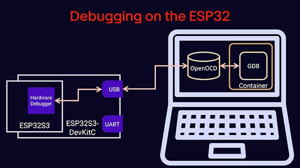

第十九课：XIAO ESP32S3 专业调试体系——JTAG、GDB、Core Dump、内存与性能分析
前面十八课，我们已经学习了 XIAO ESP32S3 的芯片架构、外设、FreeRTOS、网络、音频、AI、低功耗和 OTA。
现在进入专业嵌入式开发非常关键的一课：
当程序能够编译，却运行不正常时，应该怎样准确找到问题？
例如：
- 程序运行几分钟后突然重启。
- Wi-Fi 连接成功，但 MQTT 不断断线。
- I2S 麦克风偶尔丢失音频数据。
- FreeRTOS 任务卡死。
- PSRAM 分配成功，但 DMA 无法正常工作。
- 程序出现
Guru Meditation Error。 - Codex 修改代码后，固件可以编译，但功能不正确。
这些问题不能只依靠猜测和反复修改代码。
本课将建立一套适用于 Mac + Codex Desktop + ESP-IDF + 普通版 XIAO ESP32S3 的完整调试方法。
一、ESP32-S3 的调试系统由哪些部分组成？
调试方法可以分为五个层级。
| 层级 | 工具 | 解决的问题 |
|---|---|---|
| 1 | ESP_LOG | 程序运行到了哪里 |
| 2 | Monitor / Backtrace | 为什么发生异常 |
| 3 | GDB / JTAG | CPU 当前正在执行什么 |
| 4 | Heap / Stack / Core Dump | 内存和任务是否异常 |
| 5 | 性能分析 | 为什么程序慢、延迟高或丢数据 |
建议按照这个顺序学习。
二、ESP-IDF 日志系统：最常用的调试工具
ESP-IDF 提供统一的日志系统。
主要头文件：
#include "esp_log.h"1. 日志等级
| 等级 | 宏 | 用途 |
|---|---|---|
| Error | ESP_LOGE | 严重错误 |
| Warning | ESP_LOGW | 潜在问题 |
| Info | ESP_LOGI | 重要运行状态 |
| Debug | ESP_LOGD | 调试细节 |
| Verbose | ESP_LOGV | 更详细的运行信息 |
示例：
#include "esp_log.h"
static const char *TAG = "AUDIO";
void audio_start(void)
{
ESP_LOGI(TAG, "Audio initializing");
ESP_LOGD(TAG, "Sample rate: 16000");
ESP_LOGW(TAG, "Buffer usage is high");
ESP_LOGE(TAG, "I2S read failed");
}2. 为什么需要 TAG？
假设你的智能语音终端有多个模块：
WIFI
AUDIO
MQTT
AI
POWER
OTA每个模块都使用不同 TAG。
日志就会变成：
I WIFI: Connected
I AUDIO: Microphone initialized
I MQTT: Broker connected
W AUDIO: Buffer usage high
E MQTT: Publish failed这样可以快速定位问题所属模块。
3. 动态调整日志等级
esp_log_level_set(
"AUDIO",
ESP_LOG_DEBUG
);这可以提高 AUDIO 模块的运行时日志等级，但前提是构建配置没有在编译时裁掉相应日志。
4. 日志设计原则
不要在高速 DMA 回调或高频中断中大量打印日志。
例如音频采样率为 16kHz，如果每个采样都打印一次，串口和 CPU 会承受极大负担。
更合理的做法是：
每次采样 → 更新计数器
每秒一次 → 打印统计结果另外，日志不能输出 Wi-Fi 密码、访问令牌或其他敏感数据。
三、Mac 上使用 idf.py monitor
这是最基本的调试方式。
1. 查看串口
在 Mac 终端中：
ls /dev/cu.*找到 XIAO ESP32S3 对应的串口。
例如：
/dev/cu.usbmodemXXXX实际名称取决于板卡固件、USB 模式和 macOS 枚举结果。
2. 编译、烧录和监控
idf.py set-target esp32s3
idf.py build
idf.py -p /dev/cu.usbmodemXXXX flash monitor如果已经烧录完成，可以直接：
idf.py -p /dev/cu.usbmodemXXXX monitor3. Monitor 可以做什么？
除了查看日志，还可以辅助解析异常回溯地址。
例如：
Guru Meditation Error
Backtrace: 0x4200xxxx ...在构建信息和 ELF 文件匹配时，Monitor 可以将地址解析为源码位置。
4. 为什么必须保留 ELF 文件？
因为 .bin 主要用于设备烧录。
而 .elf 包含调试所需的符号信息。
firmware.bin → 用于烧录
firmware.elf → 用于调试和地址解析
firmware.map → 用于分析内存布局建议每次发布固件时，保存对应的 ELF、MAP、SDK 配置和构建版本。
四、Guru Meditation Error：ESP32-S3 为什么会崩溃？
这是 ESP32 开发中很常见的异常提示。
例如：
Guru Meditation Error:
Core 0 panic'ed (LoadProhibited)它通常表示 CPU 执行过程中发生了无法正常处理的异常。
常见异常
| 异常 | 可能原因 |
|---|---|
| LoadProhibited | 非法内存读取 |
| StoreProhibited | 非法内存写入 |
| InstrFetchProhibited | 从非法地址取指令 |
| IllegalInstruction | 执行非法指令 |
| LoadStoreAlignment | 不符合要求的内存对齐访问 |
| Stack Canary Watchpoint | 任务栈越界 |
| Interrupt WDT | 中断或调度长时间受阻 |
| Task WDT | 被监控任务长期未正常推进 |
1. 最简单的非法指针例子
void crash_example(void)
{
int *ptr = NULL;
*ptr = 123;
}这里尝试向空指针地址写入数据。
可能触发 StoreProhibited 等异常。
2. 如何看异常日志？
重点关注：
PC
EXCCAUSE
EXCVADDR
Backtrace其中：
PC：发生异常时的程序计数器；EXCCAUSE：异常原因；EXCVADDR：部分异常相关的访问地址；Backtrace：函数调用回溯。
如果 EXCVADDR 接近零，可能存在空指针或接近空地址的非法访问，但不能仅凭这一点就确定根因。
五、Backtrace：如何找到发生错误的源码行？
假设日志显示：
Backtrace:
0x42001234
0x42004567
0x42007890这些地址本身不容易理解。
可以使用与固件匹配的 ELF 文件解析。
例如 ESP32-S3 的 Xtensa 工具链：
xtensa-esp32s3-elf-addr2line \
-pfiaC \
-e build/your_project.elf \
0x42001234 0x42004567 0x42007890如果符号和调试信息完整，可能得到：
audio_process at main/audio.c:125
audio_task at main/audio.c:230这里的地址和行号仅为示例。
关键规则
必须使用崩溃固件对应的 ELF 文件。
如果设备运行 v1.2，而你拿 v1.3 的 ELF 解析，结果可能错误。
这也是为什么 OTA 项目必须保存每个版本的构建产物。
六、JTAG：为什么比串口日志更强大？
串口日志只能告诉你程序打印了什么。
JTAG 可以让调试器直接检查 CPU 的执行状态。

1. JTAG 能做什么？
- 暂停 CPU；
- 设置断点；
- 单步执行；
- 查看寄存器；
- 查看变量；
- 查看任务调用栈；
- 检查内存；
- 定位死循环。
2. 普通版 XIAO ESP32S3 有什么优势？
ESP32-S3 集成了 USB Serial/JTAG 控制器。
在板卡 USB 连接、芯片配置和调试接口均符合要求时，可以利用原生 USB 接口进行 JTAG 调试。
因此，不一定需要额外购买外部 JTAG 调试器。
但需要注意：
- 原生 USB Serial/JTAG 与 USB-OTG 功能的使用方式不同；
- 某些 USB 应用配置可能影响调试；
- 安全 eFuse 配置可能限制 JTAG；
- 程序异常、USB 引脚占用或 USB 配置错误可能影响连接。
七、Mac + ESP-IDF + OpenOCD + GDB 调试流程
1. 检查工具是否安装
在已经激活 ESP-IDF 环境的终端中：
which openocdwhich xtensa-esp32s3-elf-gdbidf.py --version如果找不到工具，需要检查 ESP-IDF 安装和环境激活。
2. 启动 OpenOCD
对于 ESP32-S3 内置 USB JTAG，可以尝试：
openocd \
-f board/esp32s3-builtin.cfg具体配置文件名称及可用性应以安装的 OpenOCD 版本为准。
如果 USB 设备被串口监控程序占用，应先关闭冲突的连接。
3. 启动 GDB
另一个终端：
xtensa-esp32s3-elf-gdb \
build/your_project.elf然后在 GDB 中：
target remote :3333查看 CPU 状态：
info registers查看调用栈：
bt设置断点：
break app_main继续运行：
continue单步执行：
next进入函数：
step4. 为什么调试时要注意优化等级？
编译器优化可能：
- 内联函数；
- 合并变量；
- 删除无用代码；
- 调整指令顺序。
因此，源码执行顺序不一定与实际机器指令完全对应。
调试阶段可以使用 ESP-IDF 的 Debug 构建优化配置，以提高单步调试体验。
八、FreeRTOS 任务调试
在前面的课程中，我们已经设计了很多任务：
WiFi Task
Audio Task
AI Task
MQTT Task
OTA Task
Monitor Task如果某个任务出现问题，可能影响整个系统。
1. FreeRTOS 任务的主要状态
| 状态 | 含义 |
|---|---|
| Running | 正在 CPU 上执行 |
| Ready | 可以运行，等待调度 |
| Blocked | 等待事件或超时 |
| Suspended | 被挂起 |
| Deleted | 已删除或等待资源清理 |
2. 为什么高优先级任务可能导致系统卡死？
假设：
void high_priority_task(void *arg)
{
while (1) {
heavy_work();
}
}如果任务没有合理等待、阻塞或让出 CPU，可能造成其他任务长期得不到执行机会。
在双核 ESP32-S3 上，还要考虑任务核心亲和性和中断分布。
3. 正确的任务设计
void sensor_task(void *arg)
{
while (1) {
read_sensor();
vTaskDelay(
pdMS_TO_TICKS(100)
);
}
}但是，并不是所有任务都应该使用固定延迟。
对于音频采集等实时任务，更适合使用队列、任务通知或 DMA 事件驱动。
九、Stack Overflow：任务栈溢出
每个 FreeRTOS 任务都需要栈空间。
栈中通常保存：
- 局部变量；
- 函数调用信息；
- 部分寄存器上下文；
- 临时数据。
1. 一个危险例子
void audio_task(void *arg)
{
uint8_t buffer[100000];
while (1) {
// ...
}
}如果任务栈远小于这个数组，就可能造成栈溢出。
2. 如何避免？
对于较大的缓冲区：
- 优先使用明确管理的堆内存；
- 根据 DMA 能力选择内存类型；
- 避免在任务栈中放置大型数组；
- 检查任务栈高水位。
3. 查询任务栈高水位
#include "freertos/FreeRTOS.h"
#include "freertos/task.h"
#include "esp_log.h"
void print_stack_info(void)
{
UBaseType_t free_stack =
uxTaskGetStackHighWaterMark(NULL);
ESP_LOGI(
"STACK",
"Minimum free stack: %u bytes",
(unsigned)free_stack
);
}在 ESP-IDF 的 FreeRTOS 实现中，该 API 返回的单位通常为字节，而不是上游 FreeRTOS 常见的字长单位。实际使用时应核对当前 ESP-IDF 版本。
高水位代表任务运行以来观察到的最小剩余栈空间。
十、Heap 内存泄漏与内存碎片
ESP32-S3 的内存系统比简单 MCU 更复杂。
可能包含：
- 内部 SRAM；
- PSRAM；
- DMA 能力受限的内存；
- 不同能力标志的 Heap。
1. 什么是内存泄漏？
例如：
void bad_function(void)
{
uint8_t *buffer = malloc(4096);
if (buffer == NULL) {
return;
}
// 使用 buffer
// 错误：忘记 free(buffer)
}如果这个函数反复执行，空闲内存可能持续减少。
2. 如何查询 Heap？
#include "esp_heap_caps.h"
#include "esp_log.h"
void print_heap_info(void)
{
size_t free_heap =
heap_caps_get_free_size(
MALLOC_CAP_8BIT
);
size_t largest_block =
heap_caps_get_largest_free_block(
MALLOC_CAP_8BIT
);
ESP_LOGI(
"HEAP",
"Free: %u",
(unsigned)free_heap
);
ESP_LOGI(
"HEAP",
"Largest block: %u",
(unsigned)largest_block
);
}3. 为什么空闲内存很多，malloc 仍然失败？
因为内存可能发生碎片化。
例如：
空闲 10KB
已用 5KB
空闲 10KB
已用 5KB
空闲 10KB总空闲内存：
30KB但最大连续空闲块：
10KB如果申请 20KB 连续内存，就可能失败。
因此必须同时关注：
- 总空闲内存；
- 最大连续空闲块；
- 不同内存能力区域的剩余空间。
十一、PSRAM 与 DMA 故障分析
这是音频和摄像头项目中很重要的问题。
假设：
uint8_t *buffer =
heap_caps_malloc(
4096,
MALLOC_CAP_SPIRAM
);这说明申请了具有 PSRAM 能力的内存。
但并不意味着所有外设 DMA 都能够直接访问这块内存。
1. DMA 缓冲区申请
对于需要 DMA 能力的缓冲区：
uint8_t *dma_buffer =
heap_caps_malloc(
4096,
MALLOC_CAP_DMA |
MALLOC_CAP_INTERNAL
);这种方式明确要求 DMA 能力和内部内存。
实际是否适合，还要结合具体外设驱动、对齐要求和 ESP-IDF 版本。
2. 常见 DMA 问题
| 现象 | 可能原因 |
|---|---|
| DMA 初始化失败 | 内存能力不满足 |
| 音频数据错乱 | 缓冲区生命周期错误 |
| 偶尔丢数据 | 处理速度跟不上采集速度 |
| 图像不完整 | 帧缓冲管理不正确 |
| 高负载时异常 | 内存带宽或任务调度问题 |
3. 推荐排查顺序
确认缓冲区地址
↓
检查内存能力
↓
检查缓冲区大小
↓
检查对齐要求
↓
检查 DMA 生命周期
↓
检查任务处理速度十二、Core Dump：设备崩溃后保存现场
这是非常适合长期运行设备的调试技术。
假设设备已经安装在外壳里，没有一直连接 Mac。
设备突然崩溃。
如果只有串口日志，可能无法保留现场。
Core Dump 可以保存崩溃时的部分运行状态。
1. Core Dump 能记录什么？
根据配置，可能包括：
- CPU 寄存器；
- 任务状态；
- 任务栈；
- 异常原因；
- 调用栈。
2. 如何启用？
通过：
idf.py menuconfig进入 ESP-IDF 的 Core Dump 相关配置。
可以选择支持的输出方式。
如果保存到 Flash，通常需要预留对应的 Core Dump 数据分区，并确认其大小。
3. 如何解析？
ESP-IDF 提供：
idf.py coredump-info以及：
idf.py coredump-debug具体命令选项与 Core Dump 存储方式取决于当前 ESP-IDF 版本。
4. Core Dump 有什么限制？
Core Dump 不一定能够捕获所有故障。
例如：
- 完全断电；
- 严重供电异常；
- Flash 不可写；
- 某些极端硬件故障。
此外，Core Dump 可能包含内存中的敏感数据，产品环境需要控制读取权限、存储和上传方式。
十三、性能分析：如何找出程序的瓶颈？
假设你实现了：
I2S 音频采集
↓
DSP
↓
AI 推理
↓
WebSocket 上传如果系统出现延迟，你需要知道时间花在哪里。
1. 使用 esp_timer 测量执行时间
#include <inttypes.h>
#include "esp_timer.h"
#include "esp_log.h"
void process_audio(void)
{
int64_t start = esp_timer_get_time();
// 实际音频处理代码
int64_t end = esp_timer_get_time();
ESP_LOGI(
"PERF",
"Audio processing: %" PRId64 " us",
end - start
);
}2. 为什么要分阶段测量？
例如：
| 阶段 | 示例耗时 |
|---|---|
| 音频预处理 | 3ms |
| AI 推理 | 18ms |
| 数据封装 | 2ms |
| 网络发送调用 | 5ms |
以上只是示意数据，不是 XIAO ESP32S3 实测结果。
通过分阶段测量，可以发现最值得优化的部分。
3. 关注最坏情况
实时系统不能只看平均耗时。
例如：
平均处理时间：8ms
偶尔处理时间：60ms如果音频缓冲区只能容纳 20ms 数据，就可能发生溢出。
因此建议统计：
- 最小耗时；
- 平均耗时；
- 最大耗时；
- P95 / P99 耗时；
- 缓冲区高水位；
- 丢包或溢出次数。
十四、建立统一的系统监控模块
对于你的 XIAO ESP32S3 项目，我建议每个复杂工程都包含一个独立的系统监控组件。
system_monitor/
├── system_monitor.c
├── system_monitor.h
├── memory_monitor.c
├── task_monitor.c
├── performance_monitor.c
└── crash_monitor.c建议监控：
| 指标 | 作用 |
|---|---|
| Uptime | 运行时间 |
| Reset Reason | 最近一次复位原因 |
| Free Heap | 空闲内存 |
| Largest Free Block | 最大连续内存块 |
| PSRAM Free | PSRAM 空闲空间 |
| Stack High Watermark | 任务栈安全余量 |
| Wi-Fi RSSI | 信号质量 |
| MQTT Reconnect Count | 网络稳定性 |
| Audio Overflow Count | 音频实时性 |
| OTA Version | 固件版本 |
这些数据可以：
- 输出到串口；
- 通过 HTTP 查询；
- 通过 MQTT 上传；
- 保存到日志文件。
这样就能够把前面学习的网络通信和本课的调试体系结合起来。
十五、Codex 如何参与 ESP-IDF 调试？
Codex 非常适合帮助分析：
- 编译错误；
- 链接错误；
- ESP-IDF API 使用错误；
- CMake 配置；
- Backtrace；
- Core Dump 文本；
- FreeRTOS 任务关系；
- 内存泄漏风险。
但它不能仅凭代码猜测硬件故障。
推荐工作流程
为什么不能直接让 Codex 大规模重写？
因为复杂嵌入式问题可能来自：
- 硬件接线；
- 供电；
- 引脚冲突；
- DMA；
- 任务优先级；
- 时序；
- 驱动版本；
- 内存配置。
如果没有先找到原因，大规模修改可能引入更多问题。
十六、综合实战：建立 XIAO ESP32S3 调试实验室
建议创建：
XIAO-ESP32S3-Projects/
└── projects/
└── debugging_lab/
├── 01_logging/
├── 02_backtrace/
├── 03_jtag_gdb/
├── 04_freertos_debug/
├── 05_stack_monitor/
├── 06_heap_monitor/
├── 07_dma_debug/
├── 08_core_dump/
├── 09_performance/
└── docs/
├── debugging_workflow.md
├── jtag_setup_mac.md
├── crash_analysis.md
└── performance_guide.md推荐实验顺序
| 实验 | 目标 |
|---|---|
| 日志实验 | 熟悉 ESP_LOG |
| Backtrace 实验 | 解析异常地址 |
| JTAG 实验 | 设置断点和单步 |
| FreeRTOS 实验 | 查看任务状态 |
| Stack 实验 | 监控栈空间 |
| Heap 实验 | 观察内存分配 |
| DMA 实验 | 检查缓冲区能力 |
| Core Dump 实验 | 保存和解析崩溃现场 |
| 性能实验 | 测量任务执行时间 |
涉及故意崩溃或看门狗测试时，应使用独立实验工程，避免影响正在运行的实际设备。
十七、给 Codex 的本课开发任务
十八、本课学习验收
十九、下一课：XIAO ESP32S3 工程架构、组件化与产品级开发
第二十课：从实验代码到可维护的嵌入式产品
下一课将学习如何将前面所有知识整合成一套规范的 ESP-IDF 工程体系：
- ESP-IDF 组件化开发。
- CMake 与组件依赖管理。
- BSP 板级支持包。
- HAL 与驱动抽象。
- FreeRTOS 任务架构。
- 事件总线与消息队列。
- 网络、音频、AI、OTA 模块解耦。
- 配置管理与 NVS。
- 错误码和故障恢复。
- 单元测试与硬件在环测试。
- CI 自动构建。
- 固件版本与发布流程。
- Codex 自动化开发规范。
- GitHub 开源仓库组织。
- 智能语音终端完整项目架构。
官方参考：
第十九课最重要的结论： 专业嵌入式开发不是靠反复猜测来修复问题，而是依靠日志、异常回溯、JTAG、内存统计、Core Dump 和性能数据建立证据链，再进行最小范围修改与验证。
下一课，我们将把这些能力整合到你正在使用的 XIAO-ESP32S3-Projects 开发体系中，建立一套适合长期维护、Codex 协作和 GitHub 开源的工程架构。